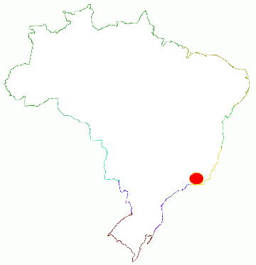
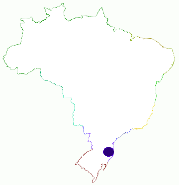

Principales dialectos del portugués en Brasil
Bahiano
Hablado predominantemente en Bahía, más utilizado en las regiones de Sergipe y de Minas Gerais. Posee dos variantes principales, que son la soteropolitana-litoranea (más al este, norte y oeste) y la catingueira (más al centro y sur).
Brasiliense
Dialecto utilizado en Brasilia y su área metropolitana.
Caipira
Hablado en la región comprendida por el interior de São Paulo, sur de Goiás, el extremo norte de Paraná, parte del Mato Grosso y Mato Grosso del Sur, sur de Minas Gerais y el Triángulo Mineiro.
Costa Norte (o cearensês)
Hablado básicamente en Ceará, en Piauí y en partes de Maranhão.
Carioca
Propio de la ciudad de Río de Janeiro y su región metropolitana.
Florianopolitano (o manezês)
Es un dialecto derivado del sulista y del gaúcho, y con características del dialecto açoriano, utilizado en la Región Metropolitana de Florianópolis y en regiones del litoral catarinense.
Fluminense (o sudestino)
Dialecto usado principalmente en el estado llamado Espírito Santo, en la región serrana y en el norte del estado de Río de Janeiro, con hablantes en el sudeste de Minas Gerais.
Gaúcho
Predominante en Río Grande del Sur, también hablado e regiones de Santa Catarina.
Mineiro (o montañés)
Utilizado principalmente en las regiones central y al este de Minas Gerais.
Nordestino
Hablado en buena parte del interior de la Región Nordeste de Brasil, como en Pernambuco, Alagoas, Paraíba, Rio Grande del Norte, parte de Sergipe, parte de Piauí, parte de Maranhão, ser de Ceará y norte de Bahía. Posee diferencias lingüísticas - subdialectos, siendo los tres principales: litoraleño (o oriental), extendiéndose desde Aracaju hasta Natal; del interior, hablado en las regiones de Agreste y Caatinga; y de los Cocais (occidental), hablado en partes de Piauí y de Maranhão.
Nortista
Utilizado en todos los estados de la cuenca del río Amazonas (exceptuando solamente la región del arco de desforestación). Se considera que tiene hasta seis sub-dialectos: el cametaês, utilizado en la región de Cametá y en algunas regiones de la Isla de Marajó; el bragantinês, hablado en la región de Bragança; el metropolitano amazónico, hablado en las capitales Belém, Manaus y Porto Velho y en sus regiones metropolitanas, y; las tres zonas de contacto fronterizo oiapoquês, roraimês y acreanês.
Paulistano
Utilizado básicamente en la macrometrópolis de São Paulo (con excepción de los municipios hablantes del dialecto caipira)
Recifense (o mateiro)
Utilizado en la Región Metropolitana de Recife y en áreas próximas.
Serra amazónica (o del arco de desforestación)
Utilizado en el sur y el este de la región Amazónica (en las regiones montañosas, de ahí el nombre "Sierra amazónica"): centro y sur de Rondônia; norte del Mato Grosso; oeste; centro y norte de Tocantins; sudoeste de Maranhão y sudeste de Pará. Las diferencias son marcadas, entre el dialecto de esta región y el de la cuenca Amazónica.
Sertanejo
Utilizado en los estados de Goiás, sur del Mato Grosso, parte de Tocantins y en parte de Mato Grosso del Sur.
Sulista
Utilizado en todo Paraná, con excepción de la región norte, prácticamente todo el estado de Santa Catarina y en el sur del estado de São Paulo.